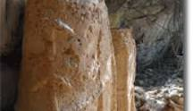

HAUTS-BASSINS

 Ce sont des abris sous roches qui contiennent des greniers et des gravures rupestres sommaires.
Elles sont situées à 16 kilomètres de Bobo-Doulasso sur la RN1 dans le village de Borodougou. Son accessibilité est facile (route bitumée) jusqu’à la bifurcation pour Borodougou. L’accès des grottes abritant les gravures est très difficile.
Le village de Borodougou est un village bâti à 10 km de Bobo Dioulasso sur la route de la capitale. Difficile de l’approcher car aucun panneau ne l’indique et la piste est étroite. C’est un village bobo qui a conservé son allure traditionnelle depuis des siècles. Comme le veut la coutume, le nom provient du fondateur du village. Les habitants connaissent bien ces greniers et savent parfaitement où les trouver ; ils les appellent “les greniers troglodytes”. Cette appellation est impropre car ces greniers ne sont pas taillés dans la roches mais construits avec de la terre crue.
Un guide est nécessaire pour marcher vers les falaises. Il faut auparavant aller saluer le chef coutumier responsable du village et des terres qui l’entourent, lui amener quelques noix de cola, et solliciter la permission d’aller visiter les greniers. Ensuite il est d’usage de solliciter une personne du village qui va vous accompagner jusqu’aux greniers. Une demi-heure de marche suffit pour se retrouver au pied d’une partie de la falaise. La végétation est assez dense et permet de protéger les greniers. Ceux-ci sont disséminés un peu partout et il vaut mieux avoir de bonnes chaussures pour grimper dans les rochers.